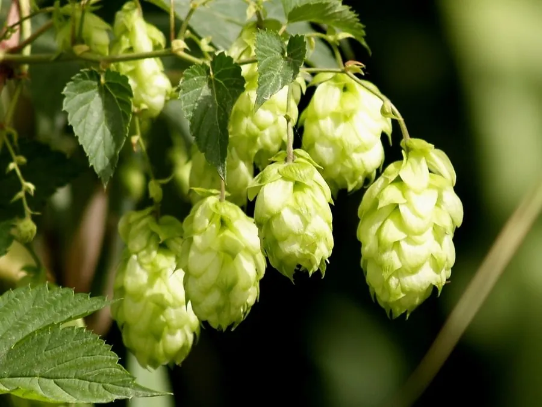

农作物与经济植物 · 植物界
啤酒花 Humulus lupulus

啤酒花的雌花含蛇麻酮和挥发油，能赋予啤酒独特的苦味与香气，并延长保质期，是酿造啤酒的关键原料。
- 分类
- 门被子植物门纲双子叶植物纲目蔷薇目科大麻科属葎草属
- 栖息环境
- 温带凉爽地区的平原与山地，喜凉爽湿润、光照充足
- 地理分布
- 原产欧洲、西亚与北美，现主产于德国、美国、中国新疆与甘肃
- 保护级别
- 暂无评估（栽培作物）
物种志
啤酒花是大麻科多年生缠绕草本，茎蔓生，长可达 6–8 m，有倒刺，可攀援生长。叶片对生，掌状 3–5 裂，边缘有锯齿，表面粗糙。雌雄异株：雄花为圆锥花序，雌花为球果状穗状花序，由许多苞片和雌花组成，俗称“酒花”。成熟时球果呈黄绿色，含有蛇麻酮和挥发油。
啤酒花原产欧洲、西亚与北美一带，人工栽培历史约 1000 年，是酿造啤酒的关键原料。它喜凉爽湿润、光照充足，适宜在土层深厚、排水良好的土壤中种植，用地下茎扦插繁殖，地上部每年冬季枯萎。雌花球果中的蛇麻酮提供啤酒的苦味，挥发油带来花香与果香，还有防腐作用、延长啤酒保质期。啤酒花也可用于制药，有镇静、助消化之效。中国新疆、甘肃是主产区，近年来精酿啤酒兴起使啤酒花需求增加。
形态与习性
- 茎缠绕，长可达 6–8 m，有倒刺
- 叶掌状 3–5 裂，边缘有锯齿
- 雌花球果状穗状花序
- 主要成分蛇麻酮与挥发油
- 用途酿造啤酒，提供苦味与香气
- 繁殖用地下茎扦插繁殖
趣味知识
- 啤酒的苦味主要来自啤酒花雌花中的蛇麻酮。
- 啤酒花还能延长啤酒保质期，是天然的防腐剂。
- 啤酒花是雌雄异株的，只有雌株的球果才用于酿造。